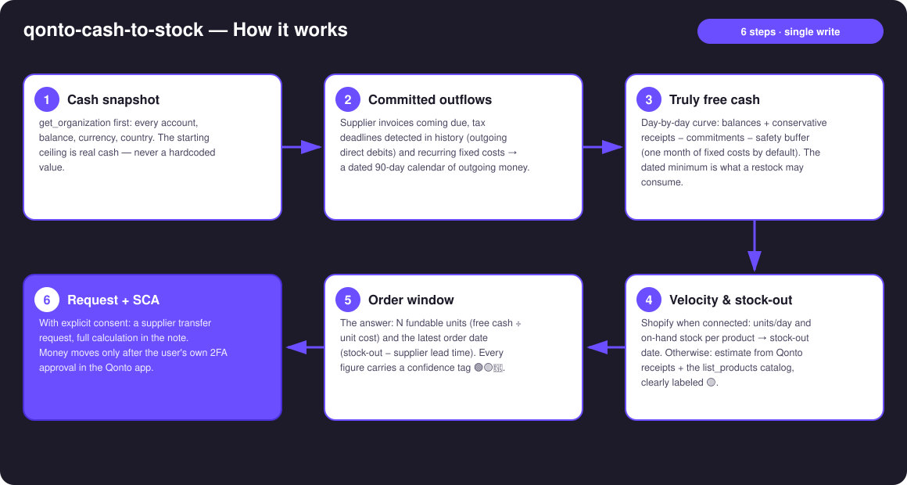
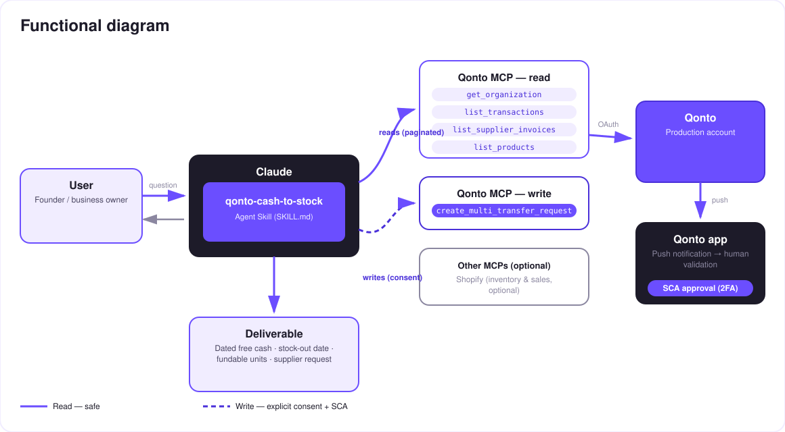

Restocking, constrained by cash — how many units you can order without endangering the account, and by when.
The real ceiling on an e-commerce restock isn't demand — it's cash. Order too much and the account is in danger the day VAT hits; order too little and a stock-out kills the momentum. The skill answers THE question — how many units, and by when:
All balances − supplier invoices coming due − detected tax deadlines − fixed costs − a safety buffer. The dated minimum of the curve.
Shopify when connected (units/day, on-hand per product); otherwise estimated from receipts + catalog, clearly labeled 🟡.
Free cash · stock-out date · fundable units · latest order date — every figure tagged 🟢🟡🔵.
The supplier transfer request when the user decides — money moves only after their SCA approval in the app.
Would someone use this on a Monday morning? That's exactly when store owners look at the weekend's sales and wonder whether they can afford to reorder.
| Prerequisite | Detail | Required |
|---|---|---|
| Qonto production account | Adapts to any organization — get_organization first, nothing hardcoded | ✅ |
| Country | Tax deadlines detected from history everywhere; calendar refinement: France. Other Qonto countries (DE, ES, IT…): only observed debits are projected — never invented deadlines | ℹ️ detected |
| Qonto MCP connected | Official connector (claude.ai / Claude Desktop), OAuth login | ✅ |
| Shopify MCP | Optional, detected dynamically: units/day + on-hand per product. Without it: clean degraded mode (🟡 estimate from receipts + catalog) | ⭕ recommended |
| ≥ 3–6 months of history | Below that: honest degradation (🟡 tags + warning); 24–36 months to catch annual tax cadences | ⭕ |
| E-commerce activity with suppliers | Otherwise the skill still works as a truly-free-cash calculator | ⭕ |

list_products catalog — every derived figure tagged 🟡, never dressed up as inventory dataqonto-tax-pilot logic, reused as-is when that skill is installed
The security model, not a limitation: reads are risk-free; the write requires explicit consent in the conversation and only produces a request. The account holder's own SCA (2FA), in the Qonto app, is what moves money. Neither Claude nor the MCP can.
| Number | How it's built | Tag |
|---|---|---|
| Free cash after commitments | Minimum of the 90-day curve: balances − suppliers − detected taxes − fixed costs − buffer (one month of fixed costs by default, adjustable) | 🟢/🟡 |
| Stock-out date | On-hand stock ÷ velocity (Shopify run-analytics-query + get-inventory-levels), or receipts + catalog estimate | 🟢 with Shopify · 🟡 without |
| Fundable units | Free cash at the payment date ÷ landed unit cost (confirmed by the user) | 🔵 depends on the cost |
| Latest order date | Stock-out date − supplier lead time (asked once) | 🔵 |
Example (fictitious figures, for illustration): "Free cash after commitments: €8,400. Stock-out expected on Sept 28. Unit cost €6.50 → 1,290 fundable units; your supplier ships in 3 weeks → order by Sept 7." It just works — and the last word is always a human thumb on SCA.
| Output | Format | When |
|---|---|---|
| Conversation reply | Markdown tables (commitments calendar, curve summary, four numbers, request recap) | Always — the baseline |
| Interactive dashboard | HTML file/artifact: free-cash curve, deadlines as markers, stock-out countdown, fundable-units gauge | When the host renders files (claude.ai artifacts, Claude Desktop, Claude Code); automatic fallback to tables |
| Qonto request note | Text attached to the transfer request, visible at SCA approval time: the full calculation | Every time a request is created |
The ≤ 3-minute demo attached to the PR walks through: the restock dilemma → commitments & truly free cash → dated stock-out & fundable units → the SCA approval filmed on a phone → the final dashboard. The detailed shooting script is kept internal (outside the repository).
| Idea | Effort | Note |
|---|---|---|
| Multi-supplier arbitration: one budget split across several orders | Medium | Reuses the free-cash curve |
| Finer seasonality (velocity weighted by month, sales events) | Medium | Shopify run-analytics-query over 12 months |
| "Latest order date" reminder pushed to a calendar (calendar MCP detected dynamically) | Low | Optional multi-MCP enrichment, in the spirit of the kickoff |
| Supplier payment scenarios (30% deposit + balance on delivery) | Low | Two dated requests instead of one |
decline_request after each test (request_type: "multi_transfers", plural)